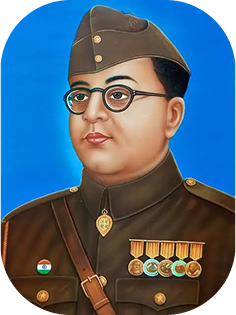

Subhas Chandra Bose
Give me blood and
I will give you freedom

Subhas Chandra Bose[d] (23 January 1897 18 August 1945) was an Indian anti-colonial nationalist whose defiance of British authority in India made him a hero among many Indians,[h] but his wartime alliances with Nazi Germany and the Empire of Japan left a legacy vexed by authoritarianism,[l] antisemitism,[r] and military failure.[v] The honorific Netaji (Hindustani for "Respected Leader") was first applied to Bose in Germany in early 1942—by the Indian soldiers of the Indische Legion and by the German and Indian officials in the Special Bureau for India in Berlin. It is now used throughout India.